Your downtown coffee stop
Find your usual.
Or your new favorite.
Coffee in hand. Something good to eat. A little time at Barista’s.
Explore the full menu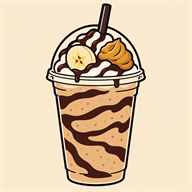
Blended favorites
Peanut butter, chocolate, caramel. Pick your happy place.
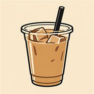
Over ice
Lattes, chai, matcha and a little afternoon refresh.
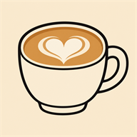
Something warm
Coffee, espresso and your favorite hot latte.
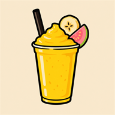
Fruit & a little fun
Fruit smoothies, Oreo and green tea blends.
 Good friends.
Good friends.Great coffee.
A little taste of the blended board
Big flavor.
Your kind of blend.
Start with one of these, then explore the whole board.
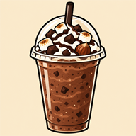
Rocky RoadMarshmallow, hazelnut & dark chocolateOff the press
Make it
coffee & a bite.
Pressed panini, loaded bagels and breakfast sandwiches. Find something savory to go with your cup.
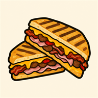
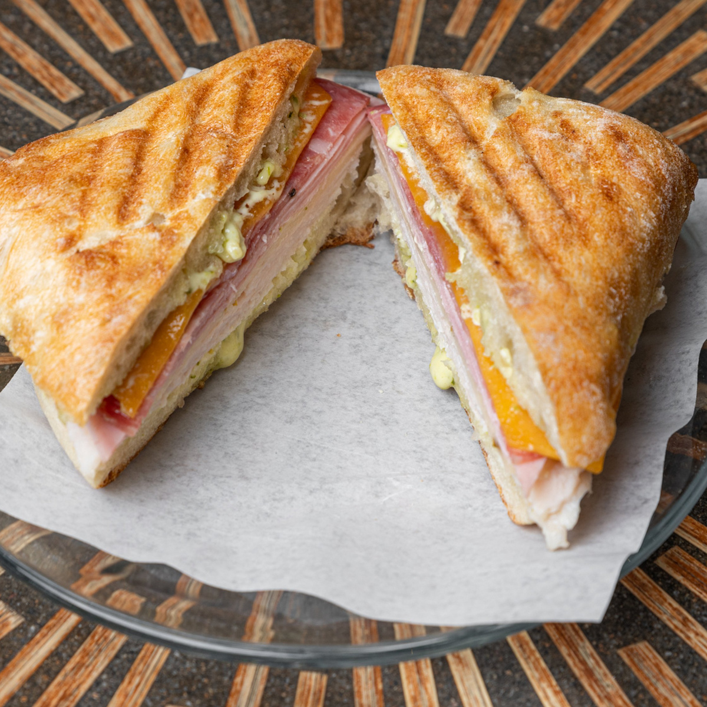
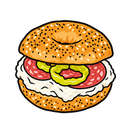
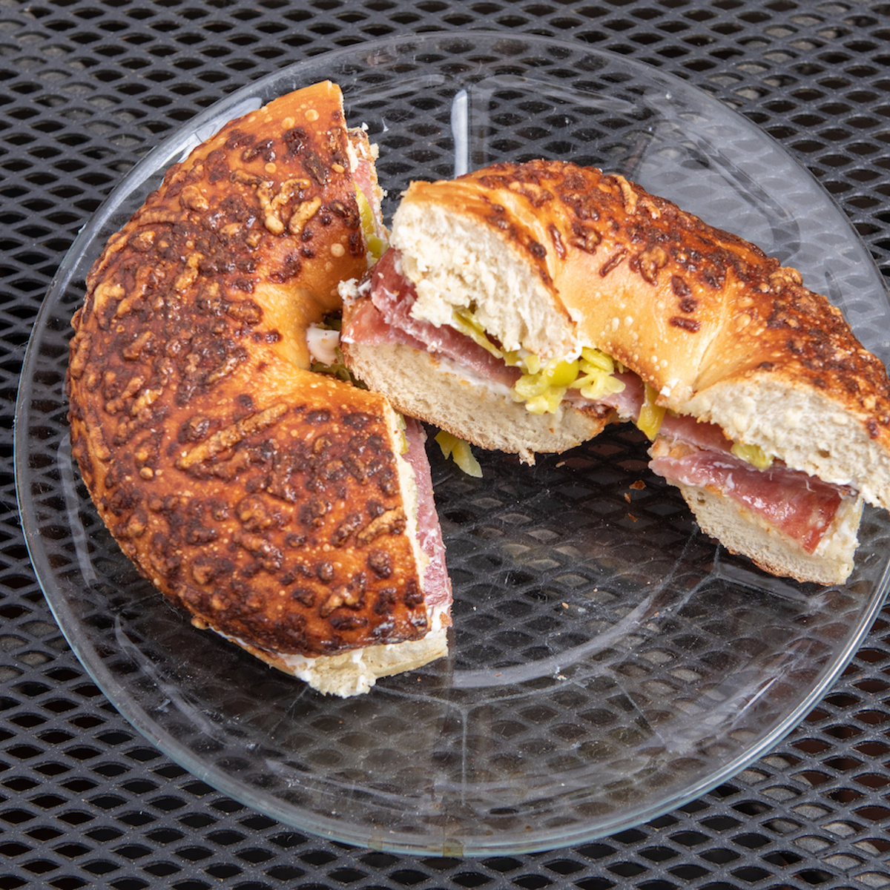
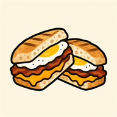
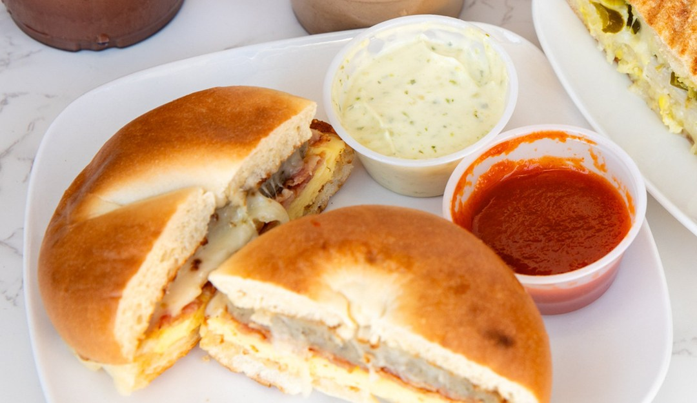
Since the chalkboards went up
Good friends,
great coffee.

Visit
On the corner of
10th and Central.
Checking today's hours

Tracy, CA 95376
Look for the awning on the corner. The patio two-tops are right out front, and the door is on 10th.